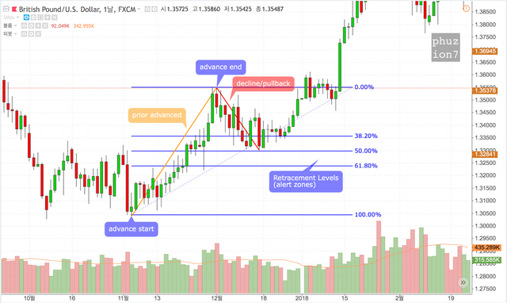

피보나치 되돌림은 잠재적인 반전 수준을 확인하기 위해 사용되는 비율이다 이 비율은 피보나치 수열을 따른다 가장 인기 있는 피보나치 되돌림은 61.8%와 38.2%이다 38.2%는 종종 반올림하여 38% 그리고 61.8은 반올림하여 62%로 사용됨을 주의하라 차티스트는 피보나치 비율을 되돌림 수준을 정의하기 위해 그리고 조정의 연장이나 되돌림(pullback)을 예측하기 위해 적용한다 또한 피보나치 되돌림은 하락 후에 역추세 반등(counter-trend bounce)의 길이를 예측하기 위해 적용된다 이 되돌림은 전체적인 전략을 생성하기 위해서 다른 지표들 그리고 가격 패턴들과 함께 결합할 수 있다
